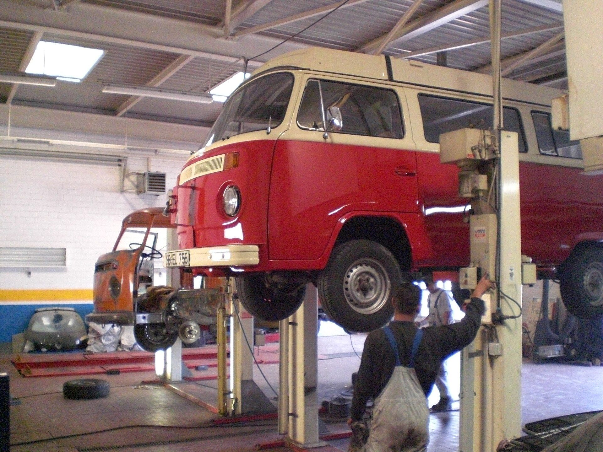

VT·01 Независимый автосервис · с 2018 года
Точная диагностика. Честный ремонт.
Обслуживаем подвеску, тормоза и электронику без навязанных «гаражных историй». Сначала причина — потом смета. Гарантия на работы — 6 месяцев.
показатели демонстрационные · реальные цифры узнавайте по телефону
VT·02 — Что делаем
Услуги мастерской
Диагностика, регламентное ТО, подвеска и тормоза — это ядро, в котором мы разбираемся до болта. Каждая услуга — отдельная страница со сроками и ценами «от».
-
VT·01 — Диагностика
Компьютерная диагностика
Считываем ошибки всех блоков, смотрим датчики в реальном времени, отдаём отчёт на русском языке.
-
VT·02 — ТО
Замена моторного масла
Подъёмник, замена масла и фильтра, осмотр на течи, сброс сервисного интервала. Быстро и чисто.
-
VT·03 — Подвеска
Диагностика подвески
Люфт-тест каждого узла на подъёмнике, фотоотчёт и смета с приоритетами: что менять сейчас.
-
VT·04 — Тормоза
Замена тормозных колодок
Колодки на ось с очисткой суппортов, замером дисков и контрольным торможением после.
-
VT·05 — ТО
Комплексное ТО
Чек-лист из 60 пунктов по регламенту вашего VIN и письменное заключение после осмотра.
-
VT·06 — Подвеска
Сход-развал 3D
Стенд с 3D-камерами: углы до заводских норм, протокол «до/после» в бардачок.
Все 10 услуг — тормозные диски, амортизаторы, АКБ и кондиционер
VT·03 — Как работаем
Четыре шага от «странного звука» до решения
Никакой таинственности: вы видите, что проверяем, что нашли и сколько это стоит — до начала работ.
-
Запись
Записали
Звонок или заявка с сайта: уточняем симптомы — когда появляется звук, на каких режимах. Подбираем окно, без очереди на подъёмник.
-
Диагностика
Проверили
Диагностика с фотоотчётом: каждый узел на подъёмнике, каждый код ошибки с расшифровкой на русском.
-
Смета
Согласовали
Смета до начала работ: что меняем, какими запчастями и сколько времени займёт. Без сюрпризов «в процессе».
-
Ремонт
Починили
Работаем в срок, который назвали. Все соединения затягиваем по моменту, выдаём гарантию 6 месяцев на работы.

VT·04 — Почему нам верят
Гарантия 6 месяцев на работы
Рабочая зона — четыре поста: подъёмник, тормозной пост, стенд сход-развала и пост замены масла. Весь цикл в одном месте, без перекидывания между подрядчиками.
- Фотоотчёт до и послеприсылаем в мессенджер: вы видите, что именно открутили и заменили.
- Запчасти по выборуоригинал, проверенный аналог или б/у с разборки — с честной разницей в цене.
- Фиксированная сметаесли вскроется что-то ещё — остановимся и перезвоним до любого расхода.
Запишитесь на диагностику за одну минуту
Опишите симптом — предложим окно и приблизительную цену до приезда.